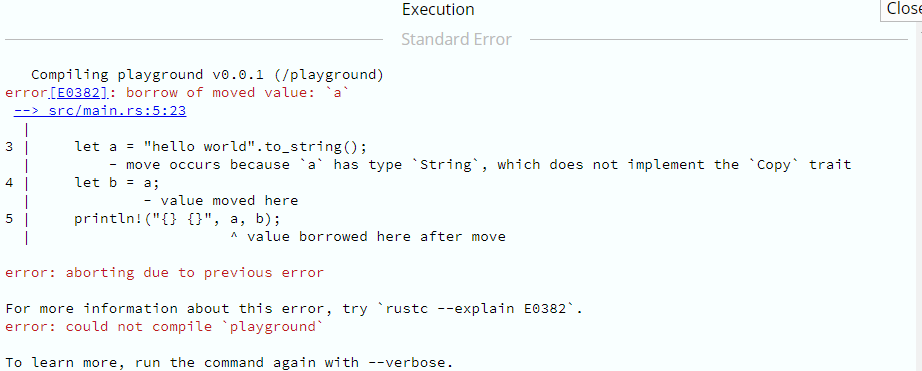
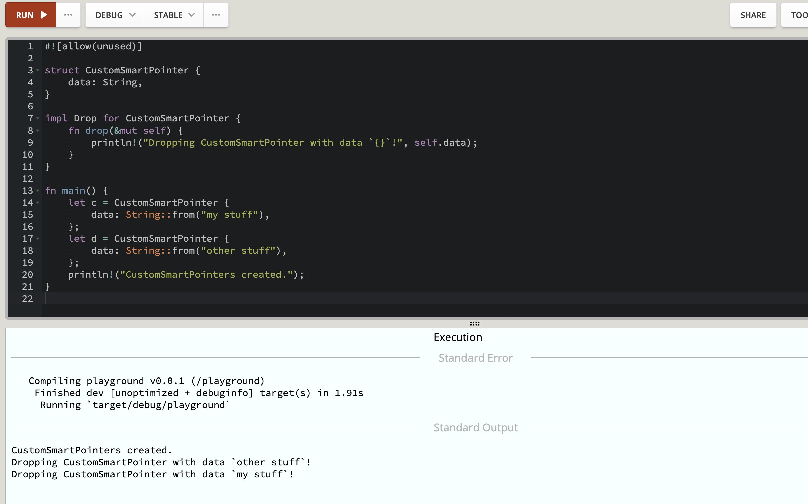
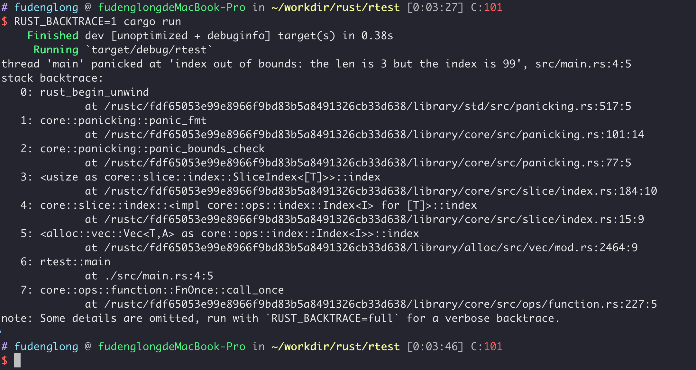
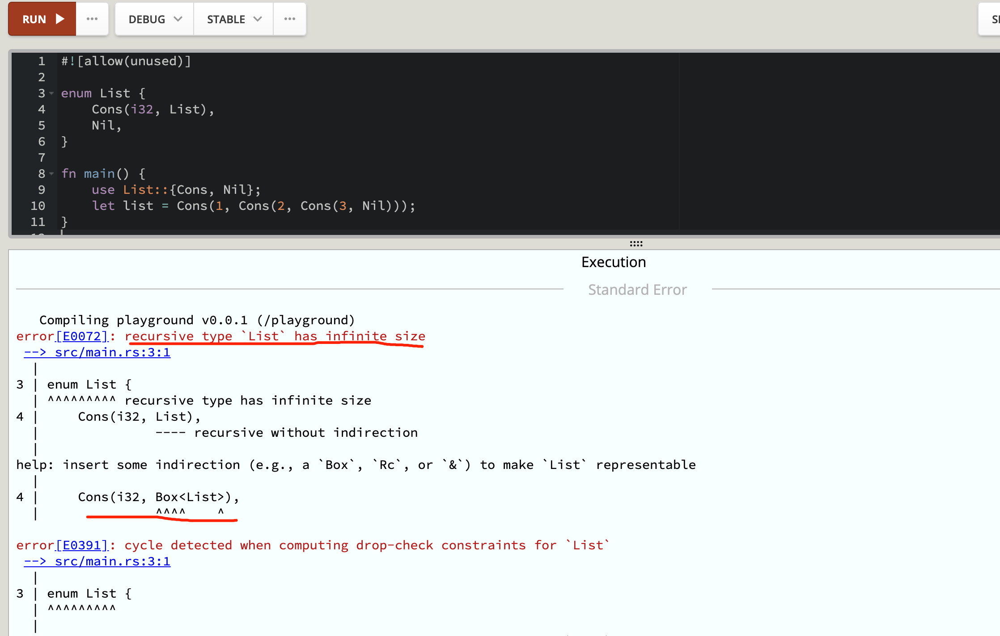
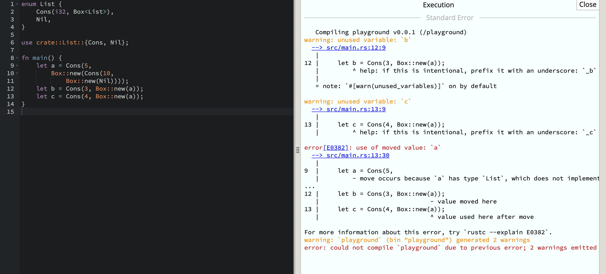
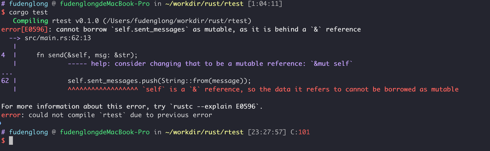
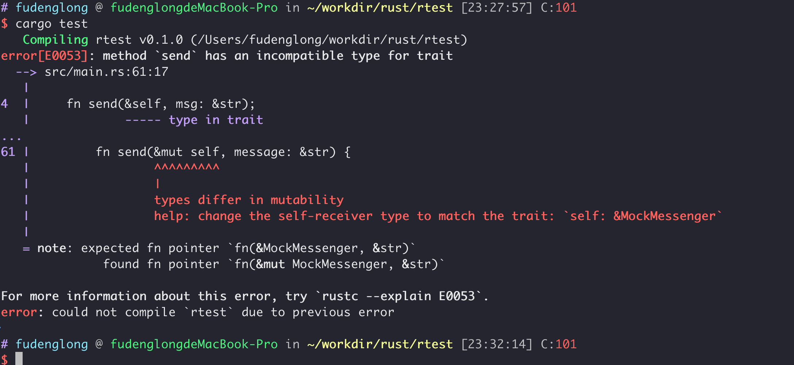
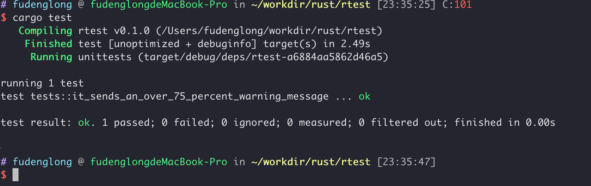
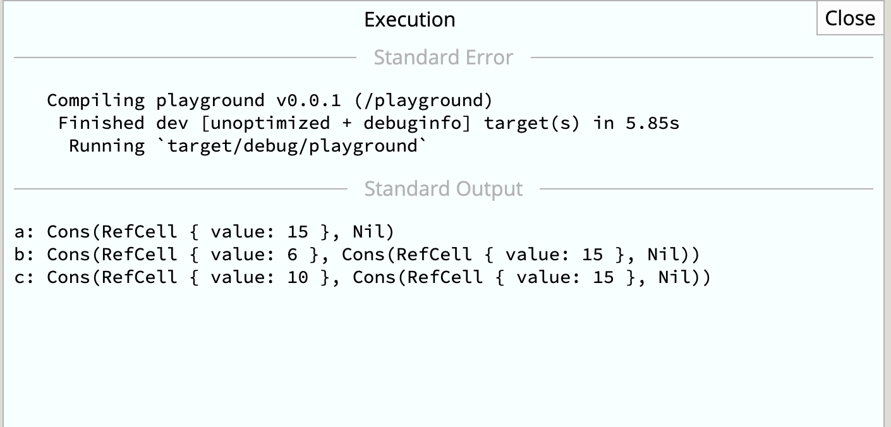

Rust 是一门赋予每个人构建可靠且高效软件能力的语言。
Rust 相比其他语言，具有显著的特点，尤其是：
性能高；Rust 速度惊人且内存利用率极高。由于没有运行时和垃圾回收，它能够胜任对性能要求特别高的服务，可以在嵌入式设备上运行，还能轻松和其他语言集成。
高可靠；Rust 丰富的类型系统和所有权模型保证了内存安全和线程安全，让您在编译期就能够消除各种各样的错误。
极具生产力；Rust 拥有出色的文档、友好的编译器和清晰的错误提示信息， 还集成了一流的工具——包管理器和构建工具， 智能地自动补全和类型检验的多编辑器支持， 以及自动格式化代码等等。
loop不同于其他语言，rust 的 loop 循环是可以返回值的，因为 loop 循环是一个表达式，表达式可以求值，这样就可以作为赋值语句使用，如下示例：
1 2 3 4 5 6 7 8 9 10 11 12 13 fn main () { let mut counter = 0 ; let result = loop { counter += 1 ; if counter == 10 { break counter * 2 ; } }; assert_eq! (result, 20 ); }
if let由于 match 模式匹配必须要指出所有的可能性，所以在使用上不是很优雅，因此有了 if let，可以说它是 match 的语法糖，可以按需只匹配自己想要的。
1 2 3 4 5 6 7 8 9 10 11 12 13 14 fn main () { let number = Some (5 ); if let Some (value) = number { println! ("value is {}" , value); } let none : Option <i32 > = None ; if let Some (n) = none { println! ("value is {}" , n); } else { println! ("value is none" ); } }
同 if let 类似，while let 可以简化代码的书写方式，使得呈现上更加优雅。
1 2 3 4 5 6 7 8 9 10 11 12 13 14 15 16 17 fn main () { let mut number = Some (0 ); loop { match number { Some (value) => { if value > 9 { number = None ; } else { number = Some (value + 1 ); println! ("number is {:?}" , number); } } None => break , } } println! ("number is none: {}" , number.is_none ()); }
1 2 3 4 5 6 7 8 9 10 11 12 fn main () { let mut number = Some (0 ); while let Some (value) = number { if value > 9 { number = None ; } else { number = Some (value + 1 ); println! ("number is {:?}" , number); } } println! ("number is none: {}" , number.is_none ()); }
rust 中某些类型的是不占用任何内存的，享受 rust 为他们提供的优化，我们可以用标准库提供的 std::mem::size_of_val 函数进行测量。
1 2 3 4 5 6 7 8 9 10 11 12 13 14 15 16 17 18 19 20 21 22 23 24 25 26 27 #![allow(unused)] enum Color { R (i16 ), G (i16 ), B (i16 ), } fn add (a: i32 , b: i32 ) -> i32 { a + b } fn main () { let add = add; let add_ptr : fn (i32 , i32 ) -> i32 = add; println! ("add size: {}" , std::mem::size_of_val (&add)); println! ("add_ptr size: {}" , std::mem::size_of_val (&add_ptr)); println! ("Color::B size: {}" , std::mem::size_of_val (&Color::B)); }
rust提供match关键字用于模式匹配，类似于其他语言中的switch，不同的是match必须列出所有可能情况。
1 2 3 4 5 6 7 8 9 10 11 12 13 14 15 16 17 18 fn main () { let number = 13 ; match number { 1 => println! ("One" ), 2 | 3 | 4 | 5 => { println! ("2 -> 5" ); } 6 ..=10 => { println! ("6 -> 10" ); } _ => println! ("others" ), } }
不仅如此，match 还可以用于解构枚举enum，下面是一个复杂的例子：
1 2 3 4 5 6 7 8 9 10 11 12 13 14 15 16 17 18 19 20 21 22 23 24 25 26 27 28 29 30 enum Color { Rgb (i32 , i32 , i32 ), Hsv (i32 , i32 , i32 ), } enum Message { Quit, Move { x: i32 , y: i32 }, Write (String ), ChangeColor (Color), } fn main () { let msg = Message::ChangeColor (Color::Hsv (0 , 160 , 255 )); match msg { Message::ChangeColor (Color::Rgb (r, g, b)) => { println! ("Change the color to red {}, green {}, and blue {}" , r, g, b) } Message::ChangeColor (Color::Hsv (h, s, v)) => { println! ( "Change the color to hue {}, saturation {}, and value {}" , h, s, v ) } _ => (), } }
match 在匹配到第一个条件之后，不会再往下匹配：
1 2 3 4 5 6 7 8 9 fn main () { let pair = (0 , 0 ); match pair { (0 , y) => println! ("First is `0` and `y` is `{:?}`" , y), (x, 0 ) => println! ("`x` is `{:?}` and last is `0`" , x), _ => (), } }
match 模式匹配可以加上 if条件语句来过滤分支，提供更加灵活的匹配方式：
1 2 3 4 5 6 7 8 9 fn main () { let pair = (2 , -2 ); match pair { (x, y) if x + y == 0 => println! ("{} + {} == 0" , x, y), (x, y) if x == y => println! ("x == y" ), (x, y) if x % y == 0 => println! ("{} % {} == 0" , x, y), _ => (), } }
match 提供了 @ 运算符用于将值绑定到变量：
1 2 3 4 5 6 7 8 9 10 11 12 13 14 15 16 17 18 19 20 21 22 23 24 25 26 27 fn age () -> u32 { 15 } fn some_number () -> Option <u32 > { Some (42 ) } fn main () { println! ("Tell me type of person you are" ); match age () { 0 => println! ("I'm not born yet I guess" ), n @ 1 ..=12 => println! ("I'm a child of age {:?}" , n), n @ 13 ..=19 => println! ("I'm a teen of age {:?}" , n), n => println! ("I'm an old person of age {:?}" , n), } match some_number () { Some (n @ 42 ) => println! ("The Answer: {}!" , n), Some (n) => println! ("Not interesting... {}" , n), _ => (), } }
解构可以非常方便地从一个结构体或者元组中提取某个字段或者全部：
1 2 3 4 5 6 7 8 9 10 11 12 13 14 15 16 17 18 19 fn main () { struct Foo { x: (u32 , u32 ), y: u32 , } let foo = Foo { x: (1 , 2 ), y: 3 }; let Foo { x: (a, b), y } = foo; println! ("a = {}, b = {}, y = {} " , a, b, y); let Foo { y: i, x: j } = foo; println! ("i = {:?}, j = {:?}" , i, j); let Foo { y, .. } = foo; println! ("y = {}" , y); }
对指针来说，解构（destructure）和解引用（dereference）要区分开，因为这两者的概念 是不同的，和 C 那样的语言用法不一样。
解引用使用 *
解构使用 &、ref、和 ref mut
1 2 3 4 5 6 7 8 9 10 11 12 13 14 15 16 17 18 19 20 21 22 23 24 25 26 27 28 29 30 31 32 33 34 35 36 37 38 39 40 41 42 43 44 45 46 47 48 49 fn main () { let reference = &4 ; match reference { &val => println! ("Got a value via destructuring: {:?}" , val), } match *reference { val => println! ("Got a value via dereferencing: {:?}" , val), } let _not_a_reference = 3 ; let ref _is_a_reference = 3 ; let value = 5 ; let mut mut_value = 6 ; match value { ref r => println! ("Got a reference to a value: {:?}" , r), } match mut_value { ref mut m => { *m += 10 ; println! ("We added 10. `mut_value`: {:?}" , m); } } }
& 和 ref 都表示获取引用，只是一个出现在表达式左边一个出现在右边，当 & 出现在右边的时候等价于 ref 出现在左边，& 出现在左边的时候等价于 * 出现在右边：
1 2 3 4 5 6 7 8 9 10 11 12 13 14 15 16 17 18 19 20 21 22 23 #![feature(core_intrinsics)] fn main () { let x = &false ; print_type_name_of (x); let &x = &false ; print_type_name_of (x); let ref x = &false ; print_type_name_of (x); let ref x = 1 ; let x = &1 ; let &y = x; let y = *x; print_type_name_of (x); print_type_name_of (y); } fn print_type_name_of <T>(_: T) { println! ("{}" , unsafe { std::intrinsics::type_name::<T>() }) }
输出：
1 2 3 4 5 &bool bool &&bool &i32 i32
参考：https://users.rust-lang.org/t/ref-keyword-versus/18818/2
模式有两种形式：refutable（可反驳的）和 irrefutable（不可反驳的）。能匹配任何传递的可能值的模式被称为是不可反驳的（irrefutable），反之，对某些可能的值进行匹配会失败的模式被称为是可反驳的（refutable）。
举个例子，let x = 5; 中的 x 可以匹配任何值不会失败，所以称为不可反驳。if let Some(x) = a_value 中，如果 a_value 是 None，那么这个表达式就匹配不上，所以称为可反驳。
为什么有这么个模式？因为，函数参数，let，for 只能接收不可反驳的模式，也就是说只允许匹配成功，是一种确定性操作。而 if let，或者 while let 表达式被限制为只能接收可反驳的模式，也就是说他们允许出现匹配不上，即匹配失败的情况，再者说，他们的出现就是为了处理成功和失败这两种情况。下面的这段代码就会编译失败 ，因为没有处理 a_value 为 None 的情况，let 也处理不了：
1 2 3 4 5 fn main () { let a_value : Option <i32 > = Some (32 ); let Some (x) = a_value; println! ("{}" , x); }
基于此，match 匹配分支必须使用可反驳模式，除了最后一个分支需要使用能匹配任何剩余值的不可反驳模式。Rust 允许我们在只有一个匹配分支的 match 中使用不可反驳模式，不过这么做不是特别有用，并可以被更简单的 let 语句替代。
方法通常用于和函数对比，和函数的区别是方法附着于对象，方法分为静态方法和实例方法，静态方法常用语构造对象，实例方法中通过关键字 self 来引用对象中的数据。
1 2 3 4 5 6 7 8 9 10 11 12 13 14 15 16 17 18 19 20 21 22 23 24 #![allow(unused)] #[derive(Debug)] struct Point { x: i32 , y: i32 , } impl Point { fn origin () -> Point { Point { x: 0 , y: 0 } } fn new (x: i32 , y: i32 ) -> Point { Point { x, y } } } fn main () { let origin = Point::origin (); let other = Point::new (1 , 2 ); }
1 2 3 4 5 6 7 8 9 10 11 12 13 14 15 16 17 18 19 20 21 22 23 24 25 26 27 28 29 30 31 32 33 34 35 36 37 38 39 #![allow(unused)] #[derive(Debug)] struct Rectangle { width: i32 , height: i32 , } impl Rectangle { fn area (&self ) -> i32 { self .height * self .width } fn plus_one (&mut self ) { self .width += 1 ; self .height += 1 ; } fn transfer (self ) -> Rectangle { self } } fn main () { let mut rec = Rectangle { width: 1 , height: 1 , }; println! ("rectangle {:?}, area is: {}" , rec, rec.area ()); rec.plus_one (); println! ("rectangle {:?}, area is: {}" , rec, rec.area ()); let rec1 = rec.transfer (); }
闭包是函数式编程中不可获取的一员，rust 对此也提供了支持，也叫 lambda，能够捕获环境中的变量，例如：
|val| val + x
这种超级简便的语法使得它在临时使用时非常方便，输入和返回值类型都可以自行推导，但是必须指定输入参数名称。在声明参数是，同函数不同，它是使用 || 而不是 () 将参数包裹起来；另外们对于单个表达式的闭包，{} 是可以省略的。
1 2 3 4 5 6 7 8 9 10 11 12 13 fn main () { let (a, b) = (32 , 32 ); let plus_b_closure = |input| input + b; let plus_one = |x| x + 1 ; fn plus_b_fn (input: i32 , b: i32 ) -> i32 { input + b } println! ("a + b = {}" , plus_b_closure (a)); println! ("a + b = {}" , plus_b_fn (a, b)); println! ("a + 1 = {}" , plus_one (a)); println! ("a + 1 = {}" , plus_one (a)); }
闭包会自动满足函数功能的要求，使得闭包不需要类型说明就可以工作。这允许变量捕获（capture）灵活地适应使用场合，既可移动（move）又可借用（borrow）变量。闭包可以通过：引用 &T， 可变引用 &mut T，值 T 自动捕获变量，也可以通过 move 强制获得变量的所有权：
1 2 3 4 5 6 7 8 9 10 11 12 13 14 15 16 17 18 19 20 21 22 23 24 25 26 27 28 29 30 31 32 33 34 35 36 37 38 39 40 41 42 43 44 45 fn main () { use std::mem; let color = "green" ; let print = || println! ("`color`: {}" , color); print (); print (); let mut count = 0 ; let mut inc = || { count += 1 ; println! ("`count`: {}" , count); }; inc (); inc (); let movable = Box ::new (3 ); let consume = || { println! ("`movable`: {:?}" , movable); mem::drop (movable); }; consume (); let numbers = vec! [1 , 2 , 3 ]; let contains = move |needle| numbers.contains (needle); println! ("numbers include 1 ? {}" , contains (&1 )); println! ("numbers include 4 ? {}" , contains (&5 )); }
虽然闭包可以自动做类型推断，但是在编写函数以闭包作为参数时，还是得必须明确指定类型，可以通过以下三个之一来指定闭包捕获变量的类型，他们的受限程度依次递减：
Fn：表示捕获方式为通过引用（&T）的闭包FnMut：表示捕获方式为通过可变引用（&mut T）的闭包FnOnce：表示捕获方式为通过值（T）的闭包
1 2 3 4 5 6 7 8 9 10 11 12 13 14 15 16 17 18 19 20 21 22 23 24 25 26 27 28 29 30 31 32 33 34 35 36 37 38 39 40 41 42 43 44 45 46 fn plus_one <T>(mut f: T)where T: FnMut (), { println! ("execute plus one" ); f (); } fn apply <F>(f: F)where F: FnOnce (), { f (); } fn main () { let mut number = 1 ; plus_one (|| number += 1 ); println! ("number is {}" , number); use std::mem; let greeting = "hello" ; let mut farewell = "goodbye" .to_owned (); let diary = || { println! ("I said {}." , greeting); farewell.push_str ("!!!" ); println! ("Then I screamed {}." , farewell); mem::drop (farewell); }; apply (diary); }
闭包可以作为输入参数，也可以作为返回值返回，由于闭包的类型是未知的，所以只有使用 impl Trait 才能返回一个闭包。除此之外，还必须使用 move 关键字，它表明所有的捕获都是通过值进行的。因为在函数退出时，任何通过引用的捕获都被丢弃，在闭包中留下无效的引用。
1 2 3 4 5 6 7 8 9 10 11 12 13 14 15 16 17 18 19 20 21 22 23 24 25 26 fn create_fn () -> impl Fn () { let text = "Fn" .to_owned (); move || println! ("This is a: {}" , text) } fn create_fnmut () -> impl FnMut () { let text = "FnMut" .to_owned (); move || println! ("This is a: {}" , text) } fn create_fnonce () -> impl FnOnce () { let text = "FnOnce" .to_owned (); move || println! ("This is a: {}" , text) } fn main () { let fn_plain = create_fn (); let mut fn_mut = create_fnmut (); let fn_once = create_fnonce (); fn_plain (); fn_mut (); fn_once (); }
函数指针 是指向代码而非数据的指针。它们可以像函数一样被调用。与引用一样，函数指针被假定为不为空，因此如果想通过 FFI 传递函数指针并能够容纳空指针，需要使用所需的的类型 Option<fn()> 。
函数指针的类型是 fn，注意和 Fn 区分，后者是闭包实现的 trait 类型。 函数指针实现了所有三个闭包 trait（Fn、FnMut 和 FnOnce），所以总是可以在调用期望闭包的函数时传递函数指针作为参数。倾向于编写使用泛型和闭包 trait 的函数，这样它就能接受函数或闭包作为参数。Fn 系列 trait 由标准库提供，所有的闭包都实现了 Fn、FnMut 或 FnOnce 中的一个或多个 。
我们可以将一个闭包转换为函数指针作为参数传入，但是仅限于没有捕获任何环境变量的闭包，这个从闭包和函数的概念上也能区分出来，闭包相对于函数，就是捕获了环境变量。没有捕获任何环境变量的闭包会被编译器重写为匿名独立函数。
1 2 3 4 5 6 #![allow(unused)] fn main () { let list_of_numbers = vec! [1 , 2 , 3 ]; let list_of_strings : Vec <String > = list_of_numbers.iter ().map (|i| i.to_string ()).collect (); println! ("{:?}" , list_of_strings); }
1 2 3 4 5 6 #![allow(unused)] fn main () { let list_of_numbers = vec! [1 , 2 , 3 ]; let list_of_strings : Vec <String > = list_of_numbers.iter ().map (ToString ::to_string).collect (); println! ("{:?}" , list_of_strings); }
在构造元组结构体时使用 () 语法进行初始化，很像是函数调用，实际上它们确实被实现为返回由参数构造的实例的函数，所以它们也被称为实现了闭包 trait 的函数指针。
1 2 3 4 5 6 7 8 9 10 11 12 13 14 15 16 17 18 #![allow(unused)] #[derive(Debug)] enum Status { Value (u32 ), Stop, } #[derive(Debug)] struct State (u32 );fn main () { let list_of_statuses : Vec <Status> = (0u32 ..5 ).map (Status::Value).collect (); println! ("{:?}" , list_of_statuses); let list_of_statuses : Vec <State> = (0u32 ..5 ).map (State).collect (); println! ("{:?}" , list_of_statuses); }
没有捕获任何环境变量的闭包会被编译器重写为匿名独立函数。
1 2 3 4 5 6 7 8 9 10 11 12 13 14 15 16 17 18 19 20 21 #![allow(unused)] #[derive(Debug)] struct RGB (i32 , i32 , i32 );fn color () -> RGB { RGB (1 , 1 , 1 ) } fn show (f: fn () -> RGB) { println! ("color is {:?}" , f ()); } fn main () { let c = || RGB (2 , 2 , 2 ); show (c); show (color); }
trait 用于定义共享的行为，trait 告诉 Rust 编译器某个特定类型拥有可能与其他类型共享的功能。可以通过 trait 以一种抽象的方式定义共享的行为，可以使用 trait bounds 指定泛型是任何拥有特定行为的类型。trait 定义是一种将方法签名组合起来的方法，目的是定义一个实现某些目的所必需的行为的集合，这里定义的方法可以只是签名说明而没有函数体。
1 2 3 4 5 pub trait Summary { fn summarize (&self ) -> String ; }
rust 官方提供了一个 use std::ops::Add;，可以用于重载 + 运算符，定义如下：
1 2 3 4 trait Add <RHS=Self > { type Output ; fn add (self , rhs: RHS) -> Self ::Output; }
这里的 Output 被称作关联类型，用来决定 add 的返回值类型，在具体实现的时候指定具体类型。这里的 RHS=Self 语法表示：默认类型参数 ，RHS 是 right hand side 的缩写，用于定义 add 方法中的 rhs 参数。如果实现 Add trait 时不指定 RHS 的具体类型，RHS 的类型将是默认的 Self 类型，也就是在其上实现 Add 的类型。
1 2 3 4 5 6 7 8 9 10 11 12 13 14 15 16 17 18 19 20 21 22 23 24 25 26 27 28 29 30 31 32 33 34 35 36 37 38 39 40 41 42 43 44 use std::ops::Add;#[derive(Debug, PartialEq)] struct Point { x: i32 , y: i32 , } impl Add for Point { type Output = Point; fn add (self , other: Point) -> Point { Point { x: self .x + other.x, y: self .y + other.y, } } } #[derive(PartialEq, Debug)] struct Millimeters (u32 );struct Meters (u32 );impl Add <Meters> for Millimeters { type Output = Millimeters; fn add (self , other: Meters) -> Millimeters { Millimeters (self .0 + (other.0 * 1000 )) } } fn main () { assert_eq! ( Point { x: 1 , y: 0 } + Point { x: 2 , y: 3 }, Point { x: 3 , y: 3 } ); let meter = Meters (1 ); let millimeters = Millimeters (1 ); assert_eq! (Millimeters (1001 ), millimeters + meter); }
Rust 既不能避免一个 trait 与另一个 trait 拥有相同名称的方法，也不能阻止为同一类型同时实现这两个 trait。甚至直接在类型上实现开始已经有的同名方法也是可能的。下面的示例中通过在方法名称前面添加 trait 限定符，我们向 rust 指定我们需要哪个实现。
1 2 3 4 5 6 7 8 9 10 11 12 13 14 15 16 17 18 19 20 21 22 23 24 25 26 27 28 29 30 31 32 33 34 35 36 37 #![allow(unused)] trait Pilot { fn fly (&self ); } trait Wizard { fn fly (&self ); } struct Human ;impl Pilot for Human { fn fly (&self ) { println! ("This is your captain speaking." ); } } impl Wizard for Human { fn fly (&self ) { println! ("Up!" ); } } impl Human { fn fly (&self ) { println! ("*waving arms furiously*" ); } } fn main () { let person = Human; person.fly (); Pilot::fly (&person); Wizard::fly (&person); }
像上面这种 fly 方法有一个 self 参数，即使有多个类型实现同一 trait，在使用 Trait::method(self)时，rust 可以根据 self 类型帮我们定位具体哪个类型的实现。然而，当遇到关联函数，即第一个参数不是 self 时，rust 就不能帮我们计算出该使用哪个类型了。下面的示例中使用完全限定语法消除歧义，该语法为：
<Type as Trait>::function(receiver_if_method, next_arg, ...);
关联函数没有 receiver
1 2 3 4 5 6 7 8 9 10 11 12 13 14 15 16 17 18 19 20 21 22 23 24 25 26 #![allow(unused)] trait Animal { fn baby_name () -> String ; } struct Dog ;impl Dog { fn baby_name () -> String { String ::from ("Spot" ) } } impl Animal for Dog { fn baby_name () -> String { String ::from ("puppy" ) } } fn main () { println! ("A baby dog is called a {}" , Dog::baby_name ()); println! ("A baby dog is called a {}" , <Dog as Animal>::baby_name ()); }
实现 trait 时需要注意的一个限制是，只有当 trait 或者要实现 trait 的类型位于 crate 的本地作用域时，才能为该类型实现 trait，这个限制是被称为相干性（coherence） 的程序属性的一部分，或者更具体的说是孤儿规则（orphan rule）。这条规则确保了其他人编写的代码不会破坏你代码，反之亦然。没有这条规则的话，两个crate可以分别对相同类型实现相同的trait，而Rust将无从得知应该使用哪一个实现。
1 2 3 4 5 6 7 8 9 10 11 12 13 14 15 16 17 18 19 20 trait Summary { fn summarize (&self ) -> String ; } struct Article { content: String , } impl Summary for Article { fn summarize (&self ) -> String { self .content.clone () } } fn main () { let article = Article { content: "hello" .to_string (), }; println! ("{}" , article.summarize ()) }
默认实现指我们在定义 trait 方法时提供默认的实现行为，在为类型实现trait时，就可以不用再去实现它的方法了。默认实现的trait方法中还允许我们调用相同trait的其他方法，即使他们没有实现。
1 2 3 4 5 6 7 8 9 10 11 12 13 14 15 16 17 18 19 20 21 22 23 24 25 26 trait Summary { fn author (&self ) -> String ; fn summarize (&self ) -> String { format! ("author is {}" , self .author ()) } } struct Article { content: String , author: String , } impl Summary for Article { fn author (&self ) -> String { self .author.clone () } } fn main () { let article = Article { content: "hello" .to_string (), author: "michael" .to_owned (), }; println! ("{}" , article.summarize ()) }
我们可以将函数参数定义为实现了某个trait的类型，这样我们不用于去关心trait背后的具体类型，只在乎这些类型的行为。实现这一目标以多种不同的语法方式，它们是等价的，只是表现形式不同。
如下，我们定义 notify 函数，指定 item 参数为实现了 Summary 的一个类型。
1 2 3 4 5 6 7 8 9 10 11 12 trait Summary { fn author (&self ) -> String ; fn summarize (&self ) -> String { format! ("author is {}" , self .author ()) } } fn notify (item: impl Summary ) { println! ("notify: {}" , item.summarize ()) }
impl 看起来比较直观，它实际上是一个较长形式的语法糖，称之为 trait bound，所以前面的 impl Summary 等价于如下的形式：
1 2 3 4 5 6 7 fn notify (item: impl Summary ) { println! ("notify: {}" , item.summarize ()) } fn notify_bound <T: Summary>(item: T) { println! ("notify: {}" , item.summarize ()) }
impl 形式在参数较少时比较方便，在参数较多时就看起来比较冗余，使用 trait bound 看起来就比较方便：
1 2 3 4 5 6 7 8 9 10 11 12 13 14 15 fn notify_para2 (item1: impl Summary , item2: impl Summary ) { println! ( "notify1: {}, notify2: {}" , item1.summarize (), item2.summarize () ) } fn notify_para2_bound <T: Summary>(item1: T, item2: T) { println! ( "notify1: {}, notify2: {}" , item1.summarize (), item2.summarize () ) }
trait bound 可以理解为将 trait 绑定到某个泛型上，当需要将参数声明为实现了多个trait的类型时，可以使用 + ：
1 2 3 4 5 6 7 fn notify_two_trait (item: impl Summary + Display) { println! ("{}" , item) } fn notify_two_trait_bound <T: Summary + Display>(item: T) { println! ("{}" , item) }
使用过多的 trait bound 也有缺点。每个泛型有其自己的 trait bound，所以有多个泛型参数的函数在名称和参数列表之间会有很长的 trait bound 信息，这使得函数签名难以阅读。为此，Rust 有另一个在函数签名之后的 where 从句中指定 trait bound 的语法。
1 2 3 4 5 6 7 8 9 10 11 fn notify_complex <T: Summary + Display, U: Debug + Copy >(item1: T, item2: U) { println! ("item1: {}, item2: {:?}" , item1, item2) } fn notify_complex_where <T, U>(item1: T, item2: U)where T: Summary + Display, U: Debug + Copy , { println! ("item1: {}, item2: {:?}" , item1, item2) }
我们可以将函数的返回值定义为实现了某个trait的类型，例如我们指定 returns_summarizable 函数返回实现了 Summary 的类型：
1 2 3 4 5 6 7 8 9 10 11 12 13 14 15 16 17 18 19 20 21 22 23 24 25 26 27 28 29 30 31 32 33 34 35 36 37 38 39 40 41 #![allow(unused)] use std::fmt::{Debug , Display};trait Summary { fn summarize (&self ) -> String ; } struct Article { content: String , author: String , } impl Summary for Article { fn summarize (&self ) -> String { self .content.clone () } } struct Tweet { content: String , author: String , } impl Summary for Tweet { fn summarize (&self ) -> String { self .content.clone () } } fn returns_summarizable () -> impl Summary { Tweet { content: String ::from ("of course, as you probably already know, people" ), author: "michael" .to_string (), } } fn main () { let tweet = returns_summarizable (); println! ("{}" , tweet.summarize ()); }
但是如果我们想从一个函数中返回多种实现了同一trait的类型，就不可以了，如下面这段代码就不能通过编译 ，因为rust需要在编译时期就确定函数返回值的大小。返回不同的类型，意味着函数的返回值大小是不确定的，这对于 rust 来说是不允许 的。
1 2 3 4 5 6 7 8 9 10 11 12 13 fn try_return_multiple_types (switch: bool ) -> impl Summary { if switch { Tweet { content: String ::from ("of course, as you probably already know, people" ), author: "michael" .to_string (), } } else { Article { content: String ::from ("of course, as you probably already know, people" ), author: "michael" .to_string (), } } }
如果我们确实想这样做，我们可以使用 Box<T> 类型，这个类型将数据实际存储在堆上，保留该数据的指针，所以其大小是固定的，这样就实现了动态分发：
1 2 3 4 5 6 7 8 9 10 11 12 13 fn try_return_multiple_types (switch: bool ) -> Box <dyn Summary> { if switch { Box ::new (Tweet { content: String ::from ("of course, as you probably already know, people" ), author: "michael" .to_string (), }) } else { Box ::new (Article { content: String ::from ("of course, as you probably already know, people" ), author: "michael" .to_string (), }) } }
有时候我们在为某一个泛型结构体实现方法的时候，首先需要它的类型实现某些trait。如下示例中，类型 Pair<T> 总是实现了 new 方法，不过只有那些为 T 类型实现了 PartialOrd trait （来允许比较） 和 Display trait （来启用打印）的 Pair<T> 才会实现 cmp_display 方法：
1 2 3 4 5 6 7 8 9 10 11 12 13 14 15 16 17 18 19 20 21 22 23 24 25 26 27 28 29 #![allow(unused)] use std::fmt::Display;struct Pair <T> { x: T, y: T, } impl <T> Pair<T> { fn new (x: T, y: T) -> Self { Self { x, y } } } impl <T: Display + PartialOrd > Pair<T> { fn cmp_display (&self ) { if self .x >= self .y { println! ("The largest member is x = {}" , self .x); } else { println! ("The largest member is y = {}" , self .y); } } } fn main () { let pair = Pair { x: 1 , y: 0 }; pair.cmp_display (); }
也可以对任何实现了特定 trait 的类型有条件地实现 trait。对任何满足特定 trait bound 的类型实现 trait 被称为 blanket implementations，他们被广泛的用于 Rust 标准库中。例如，标准库为任何实现了 Display trait 的类型实现了 ToString trait。这个 impl 块看起来像这样：
1 2 3 impl <T: Display> ToString for T { }
所以可以对任何实现了 Display trait 的类型调用由 ToString 定义的 to_string 方法。
let s = 3.to_string();
在前面的例子中，我们演示过可以在 trait 的默认实现中使用相同trait的其他方法，即使该方法未实现。但是，我们有时也需要在当前trait中使用其他trait中的功能，这就形成了 trait 依赖，被依赖的trait的我们称之为当前trait的 父trait 。
下面的例子中，OutlinePrint 在定义的默认方法 outline_print 调用了 fmt::Display 中的 to_string 方法：
1 2 3 4 5 6 7 8 9 10 11 12 13 14 15 16 17 18 19 20 21 22 23 24 25 26 27 28 29 30 31 32 33 #![allow(unused)] use std::fmt;trait OutlinePrint : fmt::Display { fn outline_print (&self ) { let output = self .to_string (); let len = output.len (); println! ("{}" , "*" .repeat (len + 4 )); println! ("*{}*" , " " .repeat (len + 2 )); println! ("* {} *" , output); println! ("*{}*" , " " .repeat (len + 2 )); println! ("{}" , "*" .repeat (len + 4 )); } } struct Point { x: i32 , y: i32 , } impl OutlinePrint for Point {}impl fmt ::Display for Point { fn fmt (&self , f: &mut fmt::Formatter) -> fmt::Result { write! (f, "({}, {})" , self .x, self .y) } } fn main () { let point = Point { x: 1 , y: 2 }; point.outline_print (); }
Copy 和 Clone 直接从字面意义上感觉没什么区别，它们最终都是产生了一个新的对象，但是这两个 trait 面向的对象不同，Copy 面向编译器，而 Clone 面向开发者。换句话说就是copy操作编译器帮我们做了，但是 clone 需要我们自己手动调用。
参考文章：
https://stackoverflow.com/questions/31012923/what-is-the-difference-between-copy-and-clone?answertab=active#tab-tophttps://doc.rust-lang.org/std/marker/trait.Copy.html#whats-the-difference-between-copy-and-clonehttps://zhuanlan.zhihu.com/p/21730929https://hashrust.com/blog/moves-copies-and-clones-in-rust/
Copy 的全称是 std::marker::CopyClone。一旦一个类型实现 Copy 意味着在任何需要的时候，我们可以简单的通过内存拷贝（C语言的按位拷贝memcpy）实现该类型的复制，而不会出现任何问题。在变量绑定、函数参数传递、函数返回值传递等场景下，它都是 copy 语义，而不再是默认的 move 语义
pub trait Copy: Clone { }
String 没有实现 Copylet 表达式的时候，是所有权转移，下面的代码编译失败
1 2 3 4 5 fn main () { let a = "hello world" .to_string (); let b = a; println! ("{} {}" , a, b); }

并不是所有的类型都可以实现 Copy 。Rust 规定，对于自定义类型，只有所有的成员都实现了 Copy ，这个类型才有资格实现 Copy。例如下面的类型：
1 2 3 4 5 #[derive(Copy, Clone)] struct Point { x: i32 , y: i32 , }
但是看下面的 PointList 类型，他就不能实现 Copy，因为 Vec<T>Copy。
1 2 3 struct PointList { points: Vec <Point>, }
虽然 PointList 不能实现 Copy，但是是由于共享引用 &T 可以 Copy，所以我们可以实现一个 PointListWrapper，包含 PointList 的一个引用，这样即使 PointList 不能 Copy，PointListWrapper 也可以 Copy。
1 2 3 4 #[derive(Copy, Clone)] struct PointListWrapper <'a > { point_list_ref: &'a PointList, }
Clone 的全称是 std::clone::Clone;clone_from 默认实现。
1 2 3 4 5 6 pub trait Clone : Sized { fn clone (&self ) -> Self ; fn clone_from (&mut self , source: &Self ) { *self = source.clone () } }
clone 方法一般用于基于语义的复制操作。所以，它做什么事情，跟具体类型的作用息息相关。比如对于 Box 类型，clone 就是执行的深拷贝，而对于 Rc 类型，clone 做的事情就是把引用计数值加1。你可以根据情况在 clone 函数中编写任意的逻辑。但是有一条规则需要注意：对于实现了 Copy 的类型，它的 clone 方法应该跟 Copy 语义相容，等同于按位拷贝。
实现了 Clone 的所有基本类型： https://doc.rust-lang.org/std/clone/trait.Clone.html#implementors
下面这段代码是编译通过 的，可以看到，String 虽然未实现 Copy，但是它实现了 Clone。
1 2 3 4 5 fn main () { let a = "hello world" .to_string (); let b = a.clone (); println! ("{} {}" , a, b); }
这三个 trait 位于 std::ops 模块中，其实是对函数调用运算符 () 的重载，区别在于 receiver 的类型，可以看到 Fn 的受限成都最高，FnOnce 最低：
1 2 3 4 5 6 7 8 9 10 11 12 13 14 15 16 pub trait FnOnce <Args> { type Output ; extern "rust-call" fn call_once (self , args: Args) -> Self ::Output; } pub trait FnMut <Args>: FnOnce <Args> { extern "rust-call" fn call_mut ( &mut self , args: Args ) -> Self ::Output; } pub trait Fn <Args>: FnMut <Args> { extern "rust-call" fn call (&self , args: Args) -> Self ::Output; }
其中 Once 的意义， 正如闭包会捕获其环境 中描述的那样：
FnOncereceiver 的所有权，如果一个类型仅仅实现了 FnOnce 它只可以被调用一次。FnOnce 由可能消耗捕获变量的闭包以及实现 FnMut 的所有类型自动实现。
由于 Fn 和 FnMut 都是 FnOnce 的 subtraits ，因此可以在需要 FnOnce 的地方使用 Fn 或 FnMut 的任何实例。如果我们在一个类函数类型参数使用场景中，如果我们期望只调用它一次，就使用 FnOnce 作为其类型，如果我们需要调用它多次是就使用 FnMut 作为其类型，如果我们还想要它不改变状态时，我们就用 Fn。
从 implementorsFnOnce 的类型 F，&F 和 &mut F 也自动实现 FnOnce。
这个例子中，consume_and_return_x 捕获了 x 并获得了其所有权，并且在第一次调用时已经将 x 的所有权转移，所以无法再次调用。
1 2 3 4 5 6 7 8 9 10 11 12 13 14 15 16 17 18 19 fn consume_with_relish <F>(func: F)where F: FnOnce () -> String , { println! ("Consumed: {}" , func ()); println! ("Delicious!" ); } fn main () { let x = String ::from ("x" ); let consume_and_return_x = move || x; consume_with_relish (consume_and_return_x); }
当我们将前面例子中变量 x 的类型由 String 改为 i32，我们来看几个变种类型，改动很小。
1 2 3 4 5 6 7 8 9 10 11 12 13 14 15 16 fn consume_with_relish <F>(func: F)where F: FnOnce () -> i32 , { println! ("Consumed: {}" , func ()); } fn main () { let x = 1 ; let consume_and_return_x = move || x; consume_with_relish (consume_and_return_x); println! ("print x again: {}" , x) }
但是由于 i32 是可复制的，所以生成的闭包也是可复制的，还记得 Copy 的含义，当所有成员都实现 Copy 的时候，这个类型就可能实现 Copy。我们可以将上面示例中泛型参数 F 的类型声明为以下任何一种，就可以实现 func 多次调用，我们其实是在告诉编译器，可以通过 Copy 避免所有权的转移：
F: FnOnce() -> i32 + CopyF: Copy + FnOnce() -> i32F: Copy + FnOnce() -> i32 + Copy 下面的例子运行是没有问题的，consume_and_return_x 获取了变量 x 的所有权，因为 String 不可 Copy。但是我们在使用的时候并没有消耗它的所有权，所以是可以多次使用的。这个时候 consume_and_return_x 其实已经实现了 Fn。
1 2 3 4 5 6 7 8 9 10 11 12 13 14 15 16 fn consume_with_relish <F>(func: F)where F: Fn (), { func (); func (); } fn main () { let x = String ::from ("hello" ); let consume_and_return_x = move || println! ("{}" , x); consume_and_return_x (); consume_and_return_x (); consume_with_relish (consume_and_return_x); }
FnMut 实例可以被重复多次调用，并且可以改变环境变量。它被那些捕获了环境变量可变引用的闭包，所有Fn 的实现者，以及函数指针自动实现。对于任何实现了 FnMut 的类型 F，&mut F 也实现了 FnMut。
另外，因为 FnOnce 是 FnMut 的 父trait ，所以任何需要 FnOnce 的地方都可以传入 FnMut。当你需要对一个类似函数类型的参数限定为，可调用多次并且可改变内部状态时，可以使用 FnMut。
1 2 3 4 5 6 7 8 9 10 11 12 13 14 15 fn do_twice <F>(mut func: F)where F: FnMut (), { func (); func (); } fn main () { let mut x : usize = 1 ; let add_two_to_x = || x += 2 ; do_twice (add_two_to_x); println! ("x: {}" , x); }
Fn 要和 函数指针 fnFn 被那些仅捕获环境中变量不可变引用的闭包，或者不捕获任何东西的闭包，或者函数指针自动实现。需要 Fn或者FnMut 的地方，都可以传入 Fn。如果类型 F 实现 Fn，那么 &F 也将自动实现 Fn。
1 2 3 4 5 6 7 8 9 10 11 fn call_with_one <F>(func: F) -> usize where F: Fn (usize ) -> usize , { func (1 ) } fn main () { let double = |x| x * 2 ; assert_eq! (call_with_one (double), 2 ); }
Deref*，它包含一个 deref 方法：
1 2 3 4 pub trait Deref { type Target : ?Sized ; fn deref (&self ) -> &Self ::Target; }
常规引用是一个指针类型，一种理解指针的方式是将其看成指向储存在其他某处值的箭头。下面的示例中创建了一个 i32 值的引用，接着使用解引用运算符来跟踪所引用的数据：
1 2 3 4 5 6 7 fn main () { let x = 5 ; let y = &x; assert_eq! (5 , x); assert_eq! (5 , *y); }
定义我们自己的 MyBox 类型，实现 Deref，deref 方法体中写入了 &self.0，这样 deref 返回了我希望通过 * 运算符访问的值的引用。没有 Deref trait 的话，编译器只会解引用 & 引用类型。
1 2 3 4 5 6 7 8 9 10 11 12 13 14 15 16 17 18 19 20 21 22 23 24 25 26 27 use std::ops::Deref;#[derive(Debug)] struct MyBox <T>(T);impl <T> MyBox<T> { fn new (item: T) -> Self { MyBox (item) } } impl <T> Deref for MyBox <T> { type Target = T; fn deref (&self ) -> &Self ::Target { &self .0 } } fn main () { let x = 5 ; let y = MyBox::new (x); assert_eq! (5 , x); assert_eq! (5 , *y); assert_eq! (5 , *(y.deref ())); }
隐式引用强制转换 是 Rust 在函数或方法传参上的一种便利，这仅仅用在实现了 Deref 的 trait，隐式引用强制将这样一个类型转换为另一个类型或者引用。例如，&String 转换为 &str，因为 String 实现了 Deref 返回了 &str。
1 2 3 4 5 6 7 8 9 10 11 12 13 14 15 16 17 18 19 20 21 22 23 24 25 26 27 28 29 30 31 32 33 34 use std::ops::Deref;#[derive(Debug)] struct MyBox <T>(T);impl <T> MyBox<T> { fn new (item: T) -> Self { MyBox (item) } } impl <T> Deref for MyBox <T> { type Target = T; fn deref (&self ) -> &Self ::Target { &self .0 } } fn hello (name: &str ) { println! ("hello: {}" , name); } fn main () { hello ("apple" ); hello (&String ::from ("potato" )); hello (&MyBox::new ("michael" )); let people = MyBox::new (String ::from ("hello" )); hello (&(*people)[..]); }
类似于如何使用 Deref 重载不可变引用的 * 运算符，Rust 提供了 DerefMut* 运算符。
Rust 在发现类型和 trait 实现满足三种情况时会自动进行引用强制转换：
当 T: Deref<Target=U> 时从 &T 到 &U；
当 T: DerefMut<Target=U> 时从 &mut T 到 &mut U；
当 T: Deref<Target=U> 时从 &mut T 到 &U；
DropDrop 的实现，同时所指定的代码被用于释放类似于文件或网络连接的资源。在 Rust 中，可以指定每当值离开作用域时被执行的代码，编译器会自动插入这些代码。
指定在值离开作用域时应该执行的代码的方式是实现 Drop。Drop 要求实现一个叫做 drop 的方法，它获取一个 self 的可变引用。

任何程序都不能完全正确地按照开发者的意愿去运行，总会遇到错误，例如打开文件时，文件不存在。Rust 将程序可能出现的错误分为可恢复错误（recoverable）和 不可恢复错误（unrecoverable） 。可恢复错误通常意味着意料之中的情况，我们可以选择向用户报告错误或者进行重试。不可恢复的错误往往意味着bug，比如数组访问越界。
Rust 中没有异常，如果遇到可恢复错误就返回 Result<T, E> 让开发者处理，遇到不可恢复的错误就 panic!。
当程序遇到不可处理的异常时，选择 panic 未尝不可。可以通过宏 panic!，退出程序。
当程序 panic 时，程序默认会开始展开（unwinding） ，这意味着 Rust 会回溯栈并清理它遇到的每一个函数的数据，不过这个回溯并清理的过程有很多工作。另一种选择是直接终止（abort） ，这会不清理数据就退出程序，那么程序所使用的内存需要由操作系统来清理。如果你需要项目的最终二进制文件越小越好，panic 时通过在 Cargo.toml 的 [profile] 部分增加 panic = 'abort'，可以由展开切换为终止。例如，如果你想要在release模式中 panic 时直接终止：
1 2 [profile.release] panic = 'abort'
我们可以通过将 RUST_BACKTRACE 设置为一个非 0 的数值，用于在程序 panic 时得到程序的调用栈。
1 2 3 4 5 fn main () { let v = vec! [1 , 2 , 3 ]; v[99 ]; }
这里还提示我们可以通过将 RUST_BACKTRACE 设置为 full，得到更详细的调用栈。

程序往往不会严重到不能执行，在出现异常情况时，返回一个错误大多是比较合适的处理方式。Rust 中经常通过枚举类型 Result 代表返回一个错误或者一个期望的值。如下面 Result 的定义所示，它被定义为一个泛型，在处理正确时返回 Ok(T)，出现错误时返回错误 Err(E)。
1 2 3 4 enum Result <T, E> { Ok (T), Err (E), }
我们来看一个打开文件的例子，目的是获得操作文件的句柄，在文件不存在时，我们创建新的文件，如果都失败或者其他未知错误，直接 panic：
1 2 3 4 5 6 7 8 9 10 11 12 13 14 15 16 17 18 19 use std::fs::File;use std::io::ErrorKind;fn main () { let file_name = "hello.txt" ; let f = File::open (file_name); let f = match f { Ok (file) => file, Err (error) => match error.kind () { ErrorKind::NotFound => match File::create (file_name) { Ok (fc) => fc, Err (err) => panic! ("create file failed: {:?}" , err), }, other_err => panic! ("open file failed: {:?}" , other_err), }, }; }
看着上面层层嵌套的 match，在感叹其强大的匹配功能的同时，也会感慨较深的代码嵌套不易阅读，我们尝试对其进行简化，其中 unwrap_or_else 接受一个闭包，它在前面的返回值没有问题时，直接返回；当遇到错误时，调用我们传入的闭包继续处理，期望返回我们需要的类型。
1 2 3 4 5 6 7 8 9 10 11 12 13 14 15 use std::fs::File;use std::io::ErrorKind;fn main () { let file_name = "hello.txt" ; let f = File::open (file_name).unwrap_or_else (|error| { if error.kind () == ErrorKind::NotFound { File::create (file_name).unwrap_or_else (|error| { panic! ("{:?}" , error); }) } else { panic! ("meet unkown error: {:?}" , error); } }); }
当我们开发一个功能在遇到错误时，经常会选择向上传递错误，让调用者自由选择处理的方式，例如我们开发一个函数，读取指定的文件内容，我们可能会这样写：
1 2 3 4 5 6 7 8 9 10 11 12 13 14 15 16 use std::fs::File;use std::io::{Error, ErrorKind, Read};fn read_file_content (file: &str ) -> Result <String , Error> { let f = File::open (file); let mut f = match f { Ok (f) => f, Err (err) => return Err (err), }; let mut content = String ::new (); match f.read_to_string (&mut content) { Ok (_) => Ok (s), Err (err) => Err (err), } }
看到的是，我们使用 match 完成错误匹配，选择继续执行还是返回。但也展现出语法繁琐，所以就有了 ? 运算符。? 在遇到返回值 OK(value)，将取出 value 继续执行，如果遇到 Err，将会返回当前的错误。我们来改写上面的例子：
1 2 3 4 5 6 7 8 use std::fs::File;use std::io::{Error, ErrorKind, Read};fn read_file_content (file: &str ) -> Result <String , Error> { let mut content = String ::new (); File::open (file)?.read_to_string (&mut content)?; Ok (s) }
match 表达式与问号运算符所做的有一点不同：? 运算符所使用的错误值被传递给了 from 函数，它定义于标准库的 From trait 中，其用来将错误从一种类型转换为另一种类型。当 ? 运算符调用 from 函数时，收到的错误类型被转换为由当前函数返回类型所指定的错误类型。这在当函数返回单个错误类型来代表所有可能失败的方式时很有用，即使其可能会因很多种原因失败。只要每一个错误类型都实现了 from 函数来定义如何将自身转换为返回的错误类型，? 运算符会自动处理这些转换。总结就是，? 将收集到错误值自动转换为要返回的错误类型。
另外，由于 main 函数是比较特殊的，它返回什么类型是由限制的，一般情况下它的返回值是 ()，但是为了方便，他也允许返回 Result<(), E>，因此，我们也可以在 main 中使用 ?：
1 2 3 4 5 6 7 8 9 10 11 12 13 14 use std::fs::File;use std::io::{Error, Read};fn read_file_content (file: &str ) -> Result <String , Error> { let mut content = String ::new (); File::open (file)?.read_to_string (&mut content)?; Ok (content) } fn main () -> Result <(), Box <dyn std::error::Error>> { let content = read_file_content ("hello.txt" )?; println! ("content is: {}" , content); Ok (()) }
? 除了可以用于 Result 类型之外，还可以用于 Option 类型。如果 x 是 Option，那么若 x 是 Some ，对 x? 表达式求值将返回底层值，否则无论函数是否正在执行都将终止且返回 None 。
1 2 3 4 5 6 7 8 9 10 11 12 13 14 15 16 17 18 19 20 21 22 23 24 25 26 27 28 29 30 31 32 33 #[derive(Debug, Copy, Clone)] struct Person { job: Option <Job>, } impl Person { fn work_phone_area_code (&self ) -> Option <u8 > { self .job?.phone_number?.area_code } } #[derive(Debug, Copy, Clone)] struct Job { phone_number: Option <PhoneNumber>, } #[derive(Debug, Copy, Clone)] struct PhoneNumber { area_code: Option <u8 >, number: i32 , } fn main () { let p = Person { job: Some (Job { phone_number: Some (PhoneNumber { area_code: Some (128 ), number: 439222222 , }), }), }; assert_eq! (p.work_phone_area_code (), Some (128 )); }
Option
mapSome -> Some，None -> None 的映射，可以串起来调用，我们来举一个煮饭的例子。map 中返回的是一个新的类型，当然这个类型可以是 Option，不过这将导致 Option 嵌套。
1 2 3 4 5 6 7 8 9 10 11 12 13 14 15 16 17 18 19 20 21 22 23 24 25 26 27 28 29 30 31 32 33 34 35 36 37 38 #![allow(dead_code)] #[derive(Debug)] enum Food { Apple, Carrot, Potato, } #[derive(Debug)] struct Peeled (Food);#[derive(Debug)] struct Chopped (Food);#[derive(Debug)] struct Cooked (Food);fn cook (food: Option <Food>) -> Option <Cooked> { food.map (|f| Peeled (f)) .map (|Peeled (f)| Chopped (f)) .map (|Chopped (f)| Cooked (f)) } fn eat (food: Option <Cooked>) { match food { Some (f) => println! ("Mmm. I love {:?}" , f), None => println! ("Oh no! It wasn't edible." ), } } fn main () { let apple = Some (Food::Apple); let carrot = Some (Food::Carrot); let potato = None ; eat (cook (apple)); eat (cook (carrot)); eat (cook (potato)); }
and_thenOption 是 None 时，返回 None。否则将 Some 中包裹的值传入闭包函数，这个闭包返回一个新的 Option。
1 2 3 4 5 6 7 8 9 10 11 12 13 14 15 #![allow(unused)] fn sq (x: u32 ) -> Option <u32 > { Some (x * x) } fn nope (_: u32 ) -> Option <u32 > { None } fn main () { assert_eq! (Some (2 ).and_then (sq).and_then (sq), Some (16 )); assert_eq! (Some (2 ).and_then (sq).and_then (nope), None ); assert_eq! (Some (2 ).and_then (nope).and_then (sq), None ); assert_eq! (None .and_then (sq).and_then (sq), None ); }
定义自己的错误类型在传递错误信息时是必要的，我们来看一个例子，将一个字符串数组中的第一个元素转换为数字并且乘以2。下面的代码中我们也定义了自己的 Result 类型，定义自己的错误类型需要实现 Error
1 2 3 4 5 6 7 8 9 10 11 12 13 14 15 16 17 18 19 20 21 22 23 24 25 26 27 28 29 30 31 32 33 34 35 36 37 38 39 40 use std::error;use std::fmt;type Result <T> = std::result::Result <T, DoubleFirstError>;#[derive(Debug, Clone)] struct DoubleFirstError ;impl fmt ::Display for DoubleFirstError { fn fmt (&self , f: &mut fmt::Formatter) -> fmt::Result { write! (f, "double first int error" ) } } impl error ::Error for DoubleFirstError {}fn double_first (vec: &Vec <&str >) -> Result <i32 > { vec.first ().ok_or (DoubleFirstError).and_then (|s| { s.parse::<i32 >() .map_err (|_| DoubleFirstError) .map (|i| 2 * i) }) } fn print (result: Result <i32 >) { match result { Ok (r) => println! ("the result is {}" , r), Err (e) => println! ("err is {}" , e), } } fn main () { let numbers = vec! ["42" , "93" , "18" ]; let empty = vec! []; let strings = vec! ["tofu" , "93" , "18" ]; print (double_first (&numbers)); print (double_first (&empty)); print (double_first (&strings)); }
Box<error::Error>当我们只关注错误信息，而不关注错误类型的时候，我们可以将错误装进 Box，我们对上面的例子稍加修改：
1 2 3 4 5 6 7 8 9 10 11 12 13 14 15 16 17 18 19 20 21 22 23 24 25 26 27 28 29 30 31 32 33 34 35 36 37 38 39 40 use std::error;use std::fmt;type Result <T> = std::result::Result <T, Box <dyn error::Error>>;#[derive(Debug, Clone)] struct DoubleFirstError ;impl fmt ::Display for DoubleFirstError { fn fmt (&self , f: &mut fmt::Formatter) -> fmt::Result { write! (f, "double first int error" ) } } impl error ::Error for DoubleFirstError {}fn double_first (vec: &Vec <&str >) -> Result <i32 > { vec.first ().ok_or (DoubleFirstError.into ()).and_then (|s| { s.parse::<i32 >() .map_err (|_| DoubleFirstError.into ()) .map (|i| 2 * i) }) } fn print (result: Result <i32 >) { match result { Ok (r) => println! ("the result is {}" , r), Err (e) => println! ("err is {}" , e), } } fn main () { let numbers = vec! ["42" , "93" , "18" ]; let empty = vec! []; let strings = vec! ["tofu" , "93" , "18" ]; print (double_first (&numbers)); print (double_first (&empty)); print (double_first (&strings)); }
Rust 使用 trait 解决类型之间的转换问题。最一般的转换会用到 FromInto
From、IntoFromFrom 之后，我们就自然的获得了 IntoFrom 倒过来，但是在使用 Into 的时候，我们得指明要转换的类型。
1 2 3 4 5 6 7 8 9 10 11 12 13 14 15 16 17 #[derive(Debug, Copy, Clone)] struct Number { value: i32 , } impl From <i32 > for Number { fn from (item: i32 ) -> Self { Number { value: item } } } fn main () { let number = Number::from (188 ); println! ("{:?}" , number); let number : Number = 166i32 .into (); println! ("{:?}" , number); }
TryFrom、TryInto类似于 FromIntoTryFromTryIntoResult 类型。
1 2 3 4 5 6 7 8 9 10 11 12 13 14 15 16 17 18 19 20 21 22 23 24 25 26 use std::convert::{TryFrom, TryInto};#[derive(Debug, PartialEq)] struct EvenNumber (i32 );impl TryFrom <i32 > for EvenNumber { type Error = (); fn try_from (item: i32 ) -> Result <Self , Self ::Error> { if item % 2 == 0 { Ok (EvenNumber (item)) } else { Err (()) } } } fn main () { assert_eq! (EvenNumber::try_from (8 ), Ok (EvenNumber (8 ))); assert_eq! (EvenNumber::try_from (5 ), Err (())); let result : Result <EvenNumber, ()> = 8i32 .try_into (); assert_eq! (Ok (EvenNumber (8 )), result); let result : Result <EvenNumber, ()> = 5i32 .try_into (); assert_eq! (Err (()), result) }
ToString、FromStr在我们需要将类型转换成字符串类型时，我们只需实现 ToStringfmt::Displayto_string() 方法。
另外，我们也经常需要将字符串转换成我们需要的目标类型，只要目标类型实现了 FromStrparse 方法解析，不过我们得提供要转换到的目标类型，或者使用涡轮鱼（turbo fish）语法。
1 2 3 4 5 6 7 8 9 10 11 12 13 14 15 16 17 18 19 20 use std::fmt::{Display, Formatter, Result };struct Circle { radius: i32 , } impl Display for Circle { fn fmt (&self , f: &mut Formatter<'_ >) -> Result { write! (f, "Circle({})" , self .radius) } } fn main () { let circle = Circle { radius: 12 }; println! ("{}" , circle.to_string ()); let num : i32 = "45" .parse ().unwrap (); let num1 = "55" .parse::<i32 >().unwrap (); println! ("num: {}, num1: {}" , num, num1); }
泛型可以极大地降低代码重复度，我们可以定义泛型结构体，泛型函数，泛型方法，泛型枚举等。但是我们不用担心泛型的性能，Rust 通过在编译时进行泛型代码的单态化(monomorphization)来保证效率。单态化 是一个通过填充编译时使用的具体类型，将通用代码转换为特定代码的过程。
泛型枚举我们最常见的应该是：OptionResult
1 2 3 4 5 6 7 8 9 pub enum Result <T, E> { Ok (T), Err (E), } pub enum Option <T> { None , Some (T), }
1 2 3 4 5 6 7 8 9 10 11 12 13 14 15 16 17 18 19 20 21 22 struct Point <T, U> { x: T, y: U, } impl <T, U> Point<T, U> { fn mixup <V, W>(self , other: Point<V, W>) -> Point<T, W> { Point { x: self .x, y: other.y, } } } fn main () { let p1 = Point { x: 5 , y: 10.4 }; let p2 = Point { x: "Hello" , y: 'c' }; let p3 = p1.mixup (p2); println! ("p3.x = {}, p3.y = {}" , p3.x, p3.y); }
1 2 3 4 5 6 7 8 9 10 11 12 13 14 15 16 17 18 19 20 21 22 23 fn largest <T: PartialOrd + Copy >(list: &[T]) -> T { let mut largest = list[0 ]; for &item in list.iter () { if item > largest { largest = item; } } largest } fn main () { let number_list = vec! [34 , 50 , 25 , 100 , 65 ]; let result = largest (&number_list); println! ("The largest number is {}" , result); let char_list = vec! ['y' , 'm' , 'a' , 'q' ]; let result = largest (&char_list); println! ("The largest char is {}" , result); }
也可以参考： https://doc.rust-lang.org/stable/rust-by-example/generics/gen_trait.html#traits
1 2 3 4 5 6 7 8 9 10 11 12 13 14 15 16 17 18 19 20 21 22 23 24 use std::ops::Mul;trait Area <T> { fn area (&self ) -> T; } struct Rectangle <T> { width: T, height: T, } impl <T: Copy + Mul<Output = T>> Area<T> for Rectangle <T> { fn area (&self ) -> T { self .width * self .height } } fn main () { let rec = Rectangle { width: 2 , height: 4 , }; println! ("{}" , rec.area ()); }
指针 是一个包含内存地址变量的通用概念，rust 中使用 & 或者 ref 引用一个变量。智能指针 是一类数据结构，他们的表现类似指针，但是也拥有额外的元数据和功能。在 Rust 中，普通引用和智能指针的一个额外的区别是引用是一类只借用数据的指针；相反，在大部分情况下，智能指针拥有他们指向的数据。
本节介绍几个常见的智能指针类型。
指向堆上的数据 Box<T>
当在编译时不确定类型大小，又想在需要确切大小的上下文中使用时，例如，使用 Box<dyn error:Error> 动态分发；
当有大量数据并希望在转移所有权的时候，不发生数据拷贝；
当希望拥有一个值并只关心它的类型是否实现了特定 trait 而不是其具体类型的时候；
如下示例，定义了变量 b，其值是一个指向被分配在堆上的值 5 的 Box。我们可以像数据是储存在栈上的那样访问 box 中的数据，正如任何拥有数据所有权的值那样，当像 b 这样的 box 在 main 的末尾离开作用域时，它将被释放。
1 2 3 4 fn main () { let b = Box ::new (5 ); println! ("b = {}" , b); }
Rust 需要在编译时知道类型占用多少空间。一种无法在编译时知道大小的类型是 递归类型（recursive type），其值的一部分可以是相同类型的另一个值。我们探索一下 cons list ，一个函数式编程语言中的常见类型，来展示这个（递归类型）概念。
cons list 的每一项都包含两个元素：当前项的值和下一项。其最后一项值包含一个叫做 Nil 的值且没有下一项。cons list 通过递归调用 cons 函数产生。代表递归的终止条件（base case）的规范名称是 Nil，它宣布列表的终止。
下面这段代码是不能编译通过 的，编译提示我们这个类型大小无限大 ：

另外编译器还提醒我们，不能直接存储一个值，而是应该存储一个指向这个值的指针，还提示我们应该用 Box<List>：
= help: insert indirection (e.g., a `Box`, `Rc`, or `&`) at some point to
make `List` representable
因为 Box<T> 是一个指针，我们总是知道它需要多少空间：指针的大小并不会根据其指向的数据量而改变，我们对上面的程序做出修改：
1 2 3 4 5 6 7 8 9 10 11 12 13 #![allow(unused)] #[derive(Debug)] enum List { Cons (i32 , Box <List>), Nil, } fn main () { use List::{Cons, Nil}; let list = Cons (1 , Box ::new (Cons (2 , Box ::new (Cons (3 , Box ::new (Nil)))))); println! ("{:?}" , list); }
引用计数 大部分情况下所有权是非常明确的：可以准确地知道哪个变量拥有某个值。然而，有些情况单个值可能会有多个所有者。例如，在图数据结构中，多个边可能指向相同的节点，而这个节点从概念上讲为所有指向它的边所拥有。节点直到没有任何边指向它之前都不应该被清理。
为了启用多所有权，Rust 有一个叫做 Rc<T>
可以将其想象为客厅中的电视。当一个人进来看电视时，他打开电视。其他人也可以进来看电视。当最后一个人离开房间时，他关掉电视因为它不再被使用了。如果某人在其他人还在看的时候就关掉了电视，正在看电视的人肯定会抓狂的！
Rc<T> 用于当我们希望在堆上分配一些内存供程序的多个部分读取，而且无法在编译时确定程序的哪一部分会最后结束使用它的时候。如果确实知道哪部分是最后一个结束使用的话，就可以令其成为数据的所有者，正常的所有权规则就可以在编译时生效。
Rc<T> 只能用于单线程场景
Rc<T> 共享数据我们继续看上面的例子，这一次，我们希望创建两个共享第三个列表所有权的列表，其概念将会看起来如下图所示：
我们使用之前的 Box<List> 尝试时，发现编译失败 ：
1 2 3 4 5 6 7 8 9 10 11 12 13 14 enum List { Cons (i32 , Box <List>), Nil, } use crate::List::{Cons, Nil};fn main () { let a = Cons (5 , Box ::new (Cons (10 , Box ::new (Nil)))); let b = Cons (3 , Box ::new (a)); let c = Cons (4 , Box ::new (a)); }

我们修改 List 的定义为使用 Rc<T> 代替 Box<T>，现在每一个 Cons 变量都包含一个值和一个指向 List 的 Rc<T>。当创建 b 时，不同于获取 a 的所有权，这里会克隆 a 所包含的 Rc<List>，这会将引用计数从 1 增加到 2 并允许 a 和 b 共享 Rc<List> 中数据的所有权。创建 c 时也会克隆 a，这会将引用计数从 2 增加为 3。每次调用 Rc::clone，Rc<List> 中数据的引用计数都会增加，直到有零个引用之前其数据都不会被清理。
1 2 3 4 5 6 7 8 9 10 11 12 13 14 15 16 17 18 19 use std::rc::Rc;#[derive(Debug)] enum List { Cons (i32 , Rc<List>), Nil, } use List::{Cons, Nil};fn main () { let a = Rc::new (Cons (5 , Rc::new (Cons (10 , Rc::new (Nil))))); let b = Cons (3 , Rc::clone (&a)); let c = Cons (4 , Rc::clone (&a)); println! ("a: {:?}" , a); println! ("b: {:?}" , b); println! ("c: {:?}" , c); }
可以使用 Rc::strong_countRc<T> 的引用计数值。
1 2 3 4 5 6 7 8 9 10 11 12 13 14 15 16 17 18 19 20 21 22 23 #![allow(unused)] use std::rc::Rc;#[derive(Debug)] enum List { Cons (i32 , Rc<List>), Nil, } use List::{Cons, Nil};fn main () { let a = Rc::new (Cons (5 , Rc::new (Cons (10 , Rc::new (Nil))))); println! ("count after creating a = {}" , Rc::strong_count (&a)); let b = Cons (3 , Rc::clone (&a)); println! ("count after creating b = {}" , Rc::strong_count (&a)); { let c = Cons (4 , Rc::clone (&a)); println! ("count after creating c = {}" , Rc::strong_count (&a)); } println! ("count after c goes out of scope = {}" , Rc::strong_count (&a)); }
这将输出：
count after creating a = 1
count after creating b = 2
count after creating c = 3
count after c goes out of scope = 2
内部可变性（Interior mutability）是 Rust 中的一个设计模式，它允许你即使在有不可变引用时也可以改变数据，这通常是借用规则所不允许的。不同于 Rc<T>，RefCell<T>
在任意给定时刻，只能拥有一个可变引用或任意数量的不可变引用之一（而不是两者）。
引用必须总是有效的。
对于引用和 Box<T>，借用规则的不可变性作用于编译时。对于 RefCell<T>，这些不可变性作用于运行时。对于引用，如果违反这些规则，会得到一个编译错误。而对于 RefCell<T>，如果违反这些规则程序会 panic 并退出。
在编译时检查借用规则的优势是这些错误将在开发过程的早期被捕获，同时对运行时没有性能影响，因为所有的分析都提前完成了。为此，在编译时检查借用规则是大部分情况的最佳选择，这也正是其为何是 Rust 的默认行为。相反在运行时检查借用规则的好处则是允许出现特定内存安全的场景，而它们在编译时检查中是不允许的。静态分析，正如 Rust 编译器，是天生保守的。
因为一些分析是不可能的，如果 Rust 编译器不能通过所有权规则编译，它可能会拒绝一个正确的程序；从这种角度考虑它是保守的。如果 Rust 接受不正确的程序，那么用户也就不会相信 Rust 所做的保证了。然而，如果 Rust 拒绝正确的程序，虽然会给程序员带来不便，但不会带来灾难。RefCell<T> 正是用于当你确信代码遵守借用规则，而编译器不能理解和确定的时候。
如下为选择 Box<T>，Rc<T> 或 RefCell<T> 的理由：
Rc<T> 允许相同数据有多个所有者；Box<T> 和 RefCell<T> 有单一所有者。Box<T> 允许在编译时执行不可变或可变借用检查；Rc<T> 仅允许在编译时执行不可变借用检查；RefCell<T> 允许在运行时执行不可变或可变借用检查。因为 RefCell<T> 允许在运行时执行可变借用检查，所以我们可以在即便 RefCell<T> 自身是不可变的情况下修改其内部的值。
RefCell<T> 只能用于单线程场景
来看一个例子，我们定义了 Messenger 用于发送消息，真实场景可能是发送短信或者发送邮件，注意它的 receiver 是 &ref；然后我们定义结构体 LimitTracker，它用来实现我们的业务功能，当调用它的 set_value 方法时，根据业务逻辑发送不同的消息。
1 2 3 4 5 6 7 8 9 10 11 12 13 14 15 16 17 18 19 20 21 22 23 24 25 26 27 28 29 30 31 32 33 34 35 36 37 #![allow(unused)] fn main () {pub trait Messenger { fn send (&self , msg: &str ); } pub struct LimitTracker <'a , T: Messenger> { messenger: &'a T, value: usize , max: usize , } impl <'a , T> LimitTracker<'a , T> where T: Messenger { pub fn new (messenger: &T, max: usize ) -> LimitTracker<T> { LimitTracker { messenger, value: 0 , max, } } pub fn set_value (&mut self , value: usize ) { self .value = value; let percentage_of_max = self .value as f64 / self .max as f64 ; if percentage_of_max >= 1.0 { self .messenger.send ("Error: You are over your quota!" ); } else if percentage_of_max >= 0.9 { self .messenger.send ("Urgent warning: You've used up over 90% of your quota!" ); } else if percentage_of_max >= 0.75 { self .messenger.send ("Warning: You've used up over 75% of your quota!" ); } } } }
现在我们对 LimitTracker 的功能进行测试，但是肯定不能真正实现 Messenger，所以需要对其打桩，计划是对其进行 Mock，记录发送的消息，初步计划是这样的：
1 2 3 4 5 6 7 8 9 10 11 12 13 14 15 16 17 18 19 20 21 22 23 24 25 26 27 28 29 30 #[cfg(test)] mod tests { use super::*; struct MockMessenger { sent_messages: Vec <String >, } impl MockMessenger { fn new () -> MockMessenger { MockMessenger { sent_messages: vec! [] } } } impl Messenger for MockMessenger { fn send (&self , message: &str ) { self .sent_messages.push (String ::from (message)); } } #[test] fn it_sends_an_over_75_percent_warning_message () { let mock_messenger = MockMessenger::new (); let mut limit_tracker = LimitTracker::new (&mock_messenger, 100 ); limit_tracker.set_value (80 ); assert_eq! (mock_messenger.sent_messages.len (), 1 ); } }
不出意外，编译失败 ，不能对不可变引用做修改：

按照编译器的提示，改成这样，依然编译失败，receiver 类型不匹配：
1 2 3 4 5 impl Messenger for MockMessenger { fn send (&mut self , message: &str ) { self .sent_messages.push (String ::from (message)); } }

然后我们引出我们今天的大招，RefCell，看下面的修改，我们使用 borrow_mut 和 borrow 分别在运行时进行可变借用和不可变借用：
1 2 3 4 5 6 7 8 9 10 11 12 13 14 15 16 17 18 19 20 21 22 23 24 25 26 27 28 29 30 31 32 33 34 35 36 #[cfg(test)] mod tests { use super::*; use std::cell::RefCell; struct MockMessenger { sent_messages: RefCell<Vec <String >>, } impl MockMessenger { fn new () -> MockMessenger { MockMessenger { sent_messages: RefCell::new (vec! []), } } } impl Messenger for MockMessenger { fn send (&self , message: &str ) { self .sent_messages.borrow_mut ().push (String ::from (message)); } } #[test] fn it_sends_an_over_75_percent_warning_message () { let mock_messenger = MockMessenger::new (); let mut limit_tracker = LimitTracker::new (&mock_messenger, 100 ); limit_tracker.set_value (80 ); assert_eq! (mock_messenger.sent_messages.borrow ().len (), 1 ); } }

<T> 和 RcCell<T>Rc<T> 通过引用计数的方式可以让一个值有多个所有者，RcCell<T> 可以在运行时获取值的可变引用对其修改。下面的例子中，通过对 value 的修改，a，b，c 都改了。
1 2 3 4 5 6 7 8 9 10 11 12 13 14 15 16 17 18 19 20 21 22 23 use std::rc::Rc;#[derive(Debug)] enum List { Cons (Rc<RefCell<i32 >>, Rc<List>), Nil, } use std::cell::RefCell;use List::{Cons, Nil};fn main () { let value = Rc::new (RefCell::new (5 )); let a = Rc::new (Cons (Rc::clone (&value), Rc::new (Nil))); let b = Cons (Rc::new (RefCell::new (6 )), Rc::clone (&a)); let c = Cons (Rc::new (RefCell::new (10 )), Rc::clone (&a)); *value.borrow_mut () += 10 ; println! ("a: {:?}" , a); println! ("b: {:?}" , b); println! ("c: {:?}" , c); }
